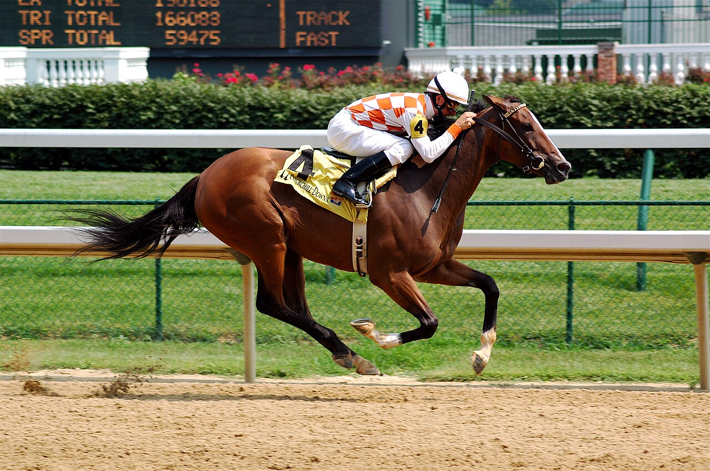

El Prix du Jockey Club 2026 se disputará el 2 de junio en Chantilly
La clásica francesa de tres años sobre 2.100 metros, creada en 1836, reparte 1,5 millones de euros en premios y se celebra en el marco del castillo de Chantilly.

Foto: Flickr user Jeff Kubina · CC BY-SA 2.0
El Prix du Jockey Club, una de las carreras de Grupo I más prestigiosas del calendario francés, tendrá lugar el próximo 2 de junio de 2026 en el hipódromo de los Príncipes de Condé, en Chantilly. La prueba reúne cada primer domingo de junio a los mejores purasangres de tres años del país sobre una distancia de 2.100 metros en pista de hierba.
Creada en 1836, la carrera constituye la segunda prueba de plat más dotada económicamente en Francia, con una bolsa global de 1,5 millones de euros, solo por detrás del Qatar Prix de l'Arc de Triomphe. Aunque las hembras pueden participar, la mayoría de propietarios y entrenadores prefieren reservar a sus mejores potrancas para el Prix de Diane Longines, disputado dos semanas después sobre la misma pista. La jornada incluye numerosas actividades para el público, desde bautismos en poni hasta un desfile con los jockeys, todo ello en el entorno del castillo de Chantilly. France Galop organiza el evento con el patrocinio de Qatar.
— Redacción de Galope al Día